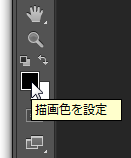
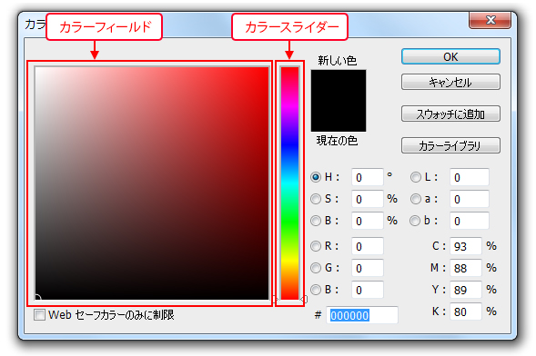
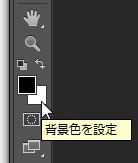
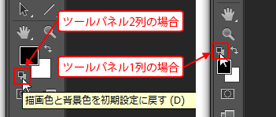

本章では、Photoshopでの色を使用するさまざまな項目を学習します。
本節では、色の指定方法について学習します。
本章で使用する素材ファイルをダウンロードしましょう。
第3章素材ファイル
Photoshopではペイントする領域には「描画色」を適用し、
消しゴムツールなど消去される領域に「背景色」を適用します。
描画色と背景色は、フィルターやグラデーションの設定にも使用されます。
描画色を変更するには、[ツールパネル]の[カラー選択ボックス]の左上をクリックします。

[カラーピッカー]ダイアログボックスが表示され、カラーを設定することができます。
カラーピッカーの操作方法は後ほど学習します。
[OK]ボタンをクリックしカラーピッカーを終了します。
また背景色を変更するには、[ツールパネル]の[カラー選択ボックス]の右下をクリックします。
描画色と同様に[カラーピッカー]ダイアログボックスが表示されます。

初期設定の「描画色」は「黒」、「背景色」は「白」です。
初期設定の状態に戻すには、ツールパネルが2列の場合はカラー選択ボックス左下に、
ツールパネルが1列の場合は左上にある
[描画色と背景色を初期設定に戻す]をクリックします。

以上でこの項の学習は終了です。
次の項へ進んでください。